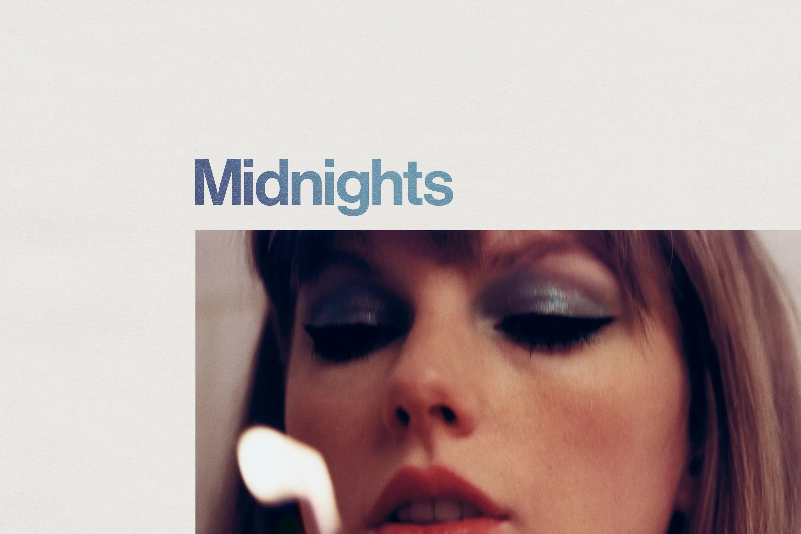

I love the holidays. Cheesy, nostalgic music and movies? Yes, please. An abundance of cookies and candies and pie? Mmhmm. An excuse to shop for hours on end? I’m in.
Whether you’re looking forward to or dreading the holidays, we’ve got recommendations for how to spend the time. For instance, my colleague David recommends a book that reminds us of “life’s cruelest and most impossible forces.” That might not scream “happy holidays” to you—but, then again, I think we’ve all spent a holiday meal or two that fits that bill. On the other end of the spectrum, Tiana recommends baking a classic, festive French dessert. And we wrap up with a few of the things we’re looking forward to gifting or getting this holiday season, just in case you’re in need
of inspiration.

Gifts we’re looking forward to giving (or receiving)
Mimi:
Whimsical or design-y
versions of everyday objects, like this pot.
Lys:
Maldon sea salt flakes—in bulk
Annie M:
Bombas socks

Taylor Swift’s new album Midnights is one of her best. It is very versatile, with many different sounds and genres. The album has a different vibe from any of her previous ones. I think that anyone—super fan or not—should give it a listen. There is bound to be at least one song you’ll love.
Annie Hanigan
marketing coordinator
Go to Annie’s pick




Easily the book-release event of the year for me, Cormac McCarthy’s 11th novel, and his first in 16 years, is also his strangest, funniest, and most beautiful. Although there’s some structural scaffolding similar to a conventional thriller, the central mysteries of The Passenger aren’t meant to be solved as much as to remind us that we’re at the mercy of life’s cruelest and most impossible forces. I read it slowly and savored every single word.

Go to David’s pick
David Peak
senior editor

Joe Danca
group account director
I’ve always been a fan of Mike Myers’ comedy, and the six-part series The Pentaverate does not disappoint. Myers plays eight different characters that all have a role in either ending or saving the world as the show pokes fun at conspiracy theories. His most notable is a (hilariously stereotypical) Canadian reporter looking to expose the secret society of five men who have influenced world events ever since the Black Plague. Each 30-minute episode is chock full of wit, humor, satire, loveable characters, and levity. And did I mention Rob Lowe? This one is definitely worth a watch.
Go to Joe’s pick
Every holiday, I pick something ambitious to make. This traditional French bûche de Noël is the perfect dessert to impress holiday party guests! Like most French recipes, this innocent-looking cake roll requires significant attention to temperature (it needs to be slightly warm for rolling) and patience in whipping the filling just right (but I won’t tell if you use Reddi-wip). Joyeux Noël!
Go to Tiana’s pick
Tiana Pigford
marketing associate